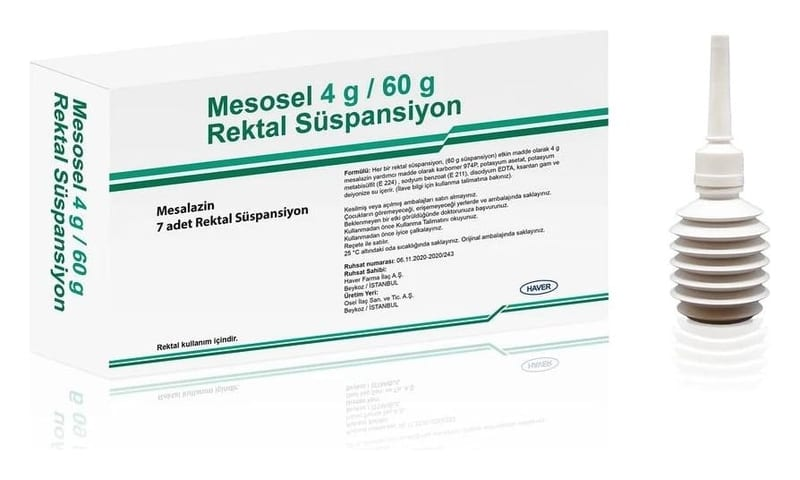

Mesosel 4 g/60 g Rektal Süspansiyon, 7 Adet

Ne için kullanılır
KT · Bölüm 1MESOSEL’i n etkin maddesi mesalazin olup, her bir rektal süspansiyonda 4 g etkin madde bulunmaktadır.
MESOSEL “aminosalisilik asit ve benzeri ilaçlar” diye adlandırılan ve “intestinal antienflamatuvar” grubuna dahil bir ilaçtır. Bu ilaçlar kalın bağırsaktaki iltihabı önler.
Akordeon biçimli LDPE şişelerin her biri LDPE/PEBD blisterli olup, kullanma talimatı ile birlikte kutu içerisinde 7 adet ürün bulunmaktadır.
MESOSEL aşağıdaki durumlarda kullanılır:
• Doktorlar tarafından ülseratif kolit olarak bilinen kalın bağırsağın (kolon) i ltihaplanması ile oluşan hastalığın akut (ani başlangıçlı) ataklarının tedavisinde kullanılır.